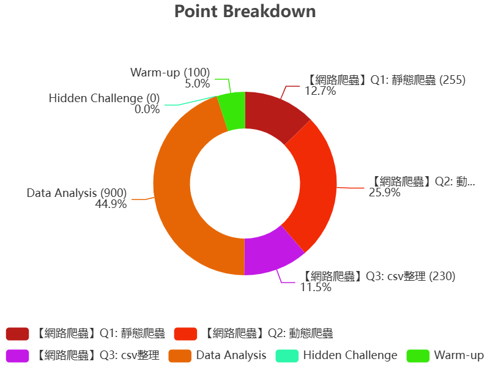
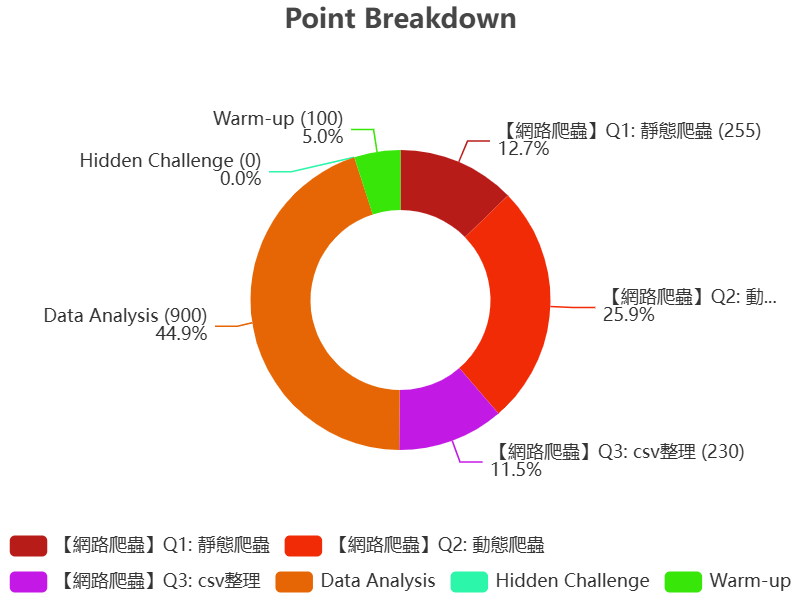
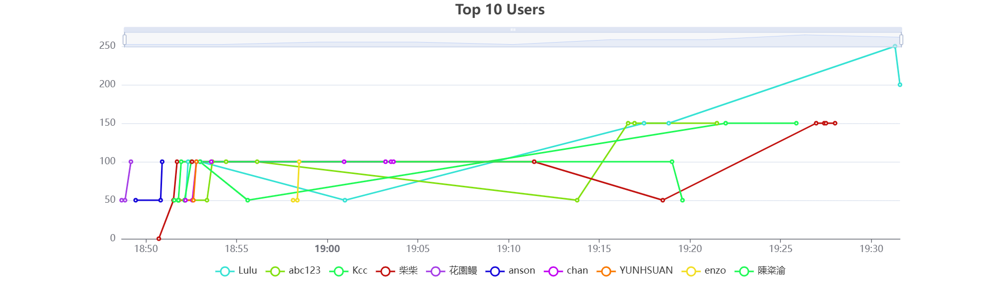
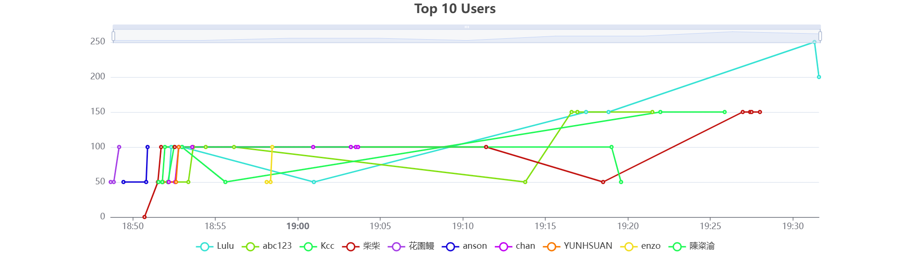
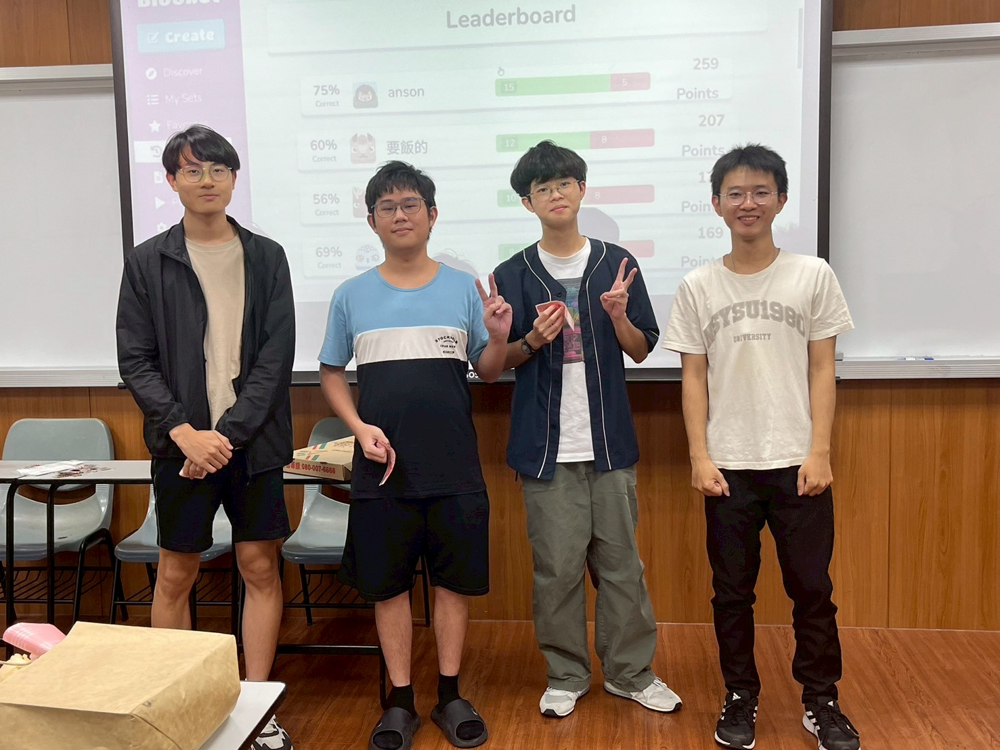
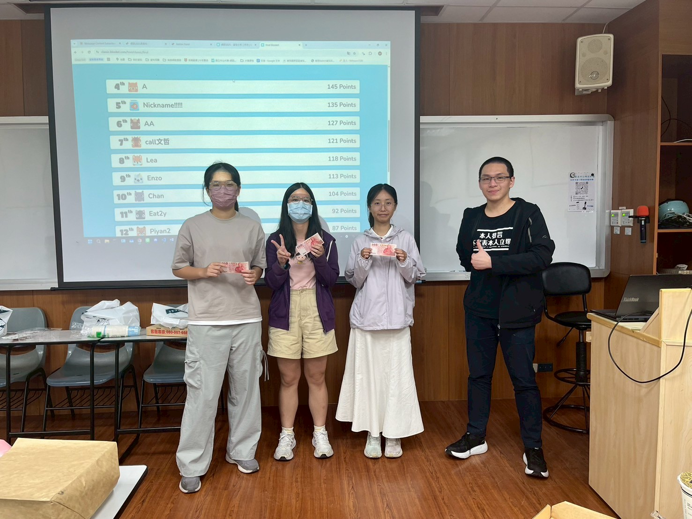
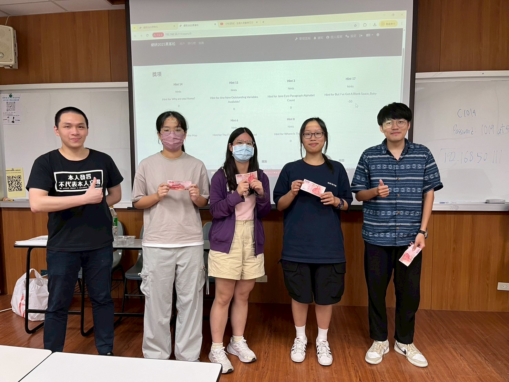
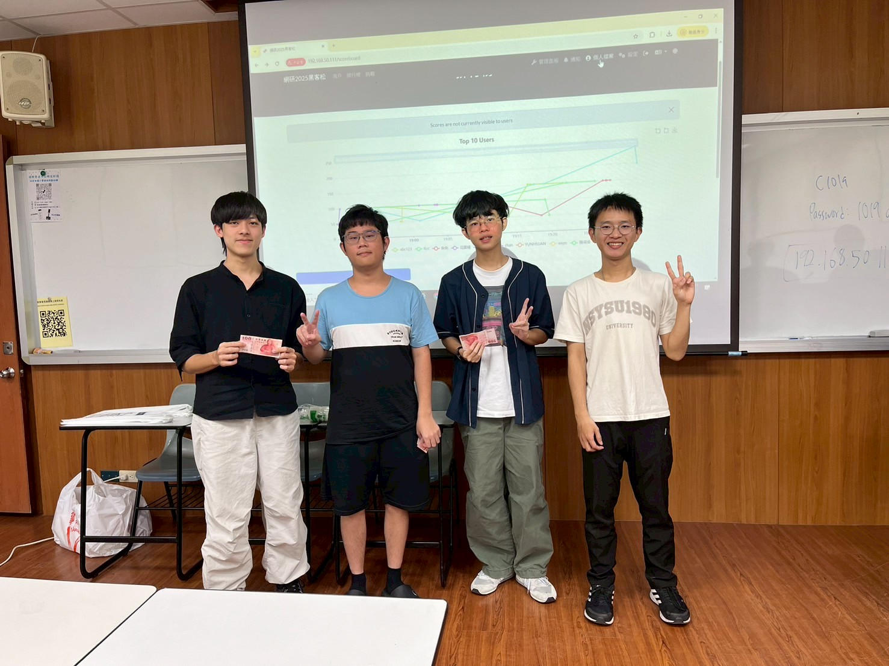

113-2期末黑客松
本學期網研社社團即將告一段落，為了感謝辛苦的講師們、幹部們以及剛結束期末考的社員，我們舉辦一場期末黑客松。
此次聚會不僅是慶祝學期成果的聚會，同時透過小型比賽驗收教學成果，藉此促進社員間的感情交流。
活動內容
Python 資料分析 & 網路爬蟲 與實作競賽
時間、地點
日期：2025年05月27日 (二)
場地: cm1019
活動流程
17:00 - 17:05 吃吃喝喝 & 期末總結
17:05 - 17:25 李景臣講師活動說明 與 Python 網路爬蟲 比賽 (20題)
17:25 - 17:45 方敬堂講師活動說明 與 Python 資料分析 比賽 (15題)
17:45 - 18:50 同學實作部分 (C++：在zero judge競賽中解題、WEB：運用所學寫個人網站)
18:50 - 19:00 頒獎
活動摘要
【Python 網路爬蟲】
預計進行以 Python 網路爬蟲設計為主題的活動，結合 Kahoot 互動問答與實作題練習。首先透過 Kahoot 測試學員對基礎的爬蟲語法、邏輯、變數等概念的遊玩測驗，再以實作題實際的爬講師精心製作的網頁提升同學的程式能力，有趣又可以實際的運用課堂所學。
【Python 資料分析】
初段利用 Kahoot 回顧課堂知識與基礎的python語法、資料分析的變數邏輯，再讓同學連上講師特別在黑客松架設的伺服器裡面解題+分析資料，題目根據不同難易度獲得不同分數，體驗由淺入深的趣味與挑戰。
比賽事項
1. 不可使用任何 AI 工具。
2. 可參考先前的講義或上網查詢語法。
3. 排名依照得分高低。
4. 不同題目會依據難易度給分。
5. 爬蟲要實際跑給講師看，不可複製同學的程式碼
題目舉例說明
Python 網路爬蟲
題目：Selenium中，有哪些方法「不能」協助避開網頁的機器人檢測？
選項：
- A. 修改navigator.webdriver屬性為false
- B. 設置User-Agent
- C. 使用ActionChains模擬使用者操作
- D. 禁用所有外部資源加載
計算過程：
我們要判斷哪些方法無法協助避開網頁的機器人檢測。A. 修改 navigator.webdriver 屬性為 false → 常見反偵測手法，可避免網站透過 navigator.webdriver == true 判斷自動化工具。✅可用
B. 設置 User-Agent → 模擬一般瀏覽器發送請求的標頭資訊，是常見且有效的反機器人偵測手段。✅可用
C. 使用 ActionChains 模擬使用者操作 → 模擬滑鼠移動、點擊、拖曳等操作，有助於讓自動化行為更貼近真人。✅可用
D. 禁用所有外部資源加載 → 雖可提升效能，但會導致網頁行為異常，進而更容易被網站發現為機器人，反而不利於避開檢測。❌不能用
答案與解說：
正確答案為 D。禁用所有外部資源如圖片、CSS、JavaScript 雖可加快載入速度，但網站常利用這些資源中的 JavaScript 進行驗證，如行為追蹤與指紋辨識。完全禁用反而讓網站更容易察覺爬蟲行為，因此「不能」協助避開機器人檢測。
教學目標：
本題旨在幫助學生理解 Selenium 中的反機器人偵測機制，以及常見的反偵測手法與其效果，並學會辨別哪些手法對繞過檢測有幫助，哪些則反而造成暴露風險。Python 資料分析 Kahoot
題目：Decision Tree是用什麼決定判斷結果好壞？
選項：
- A. F1 Score
- B. Entropy
- C. Recall
- D. Accuracy
答案與解說：
正確答案為 B。決策樹在建構過程中，會根據某些「純度指標（impurity measures）」來選擇最佳的切分特徵。最常見的就是 Entropy（熵），以及其衍生的 資訊增益（Information Gain）。 這些指標用來評估節點資料的混亂程度，選擇可使資料純度提高最多的特徵作為分裂依據。 而選項中的 A（F1 Score）、C（Recall）、D（Accuracy）都是整體模型評估指標，不是用來建構樹的依據。
教學目標：
本題目的設計是為了讓學生了解決策樹的內部運作邏輯，特別是如何利用熵（Entropy）或資訊增益來進行節點分裂，進一步培養學生區分「模型訓練依據」與「模型評估指標」的能力。Python 資料分析 實作
總共6題，完整的題目zip檔在下方，這邊僅展示其中一題。
題目：Why are you Homo?
附件是一份與大學生相關的資料，總共1500筆(聲明: 沒有任何資管大二的資料集遭竊用)，看著這份資料集，突然好想知道(?)有沒有哪些feature是與其他有不同的分布?其中最不同的一組的p value又有多小呢?

資料集的一小部分
結果統計圖
 

 

得獎照片
Python 網路爬蟲 - Kahoot
得獎：許家瑋、劉育安、廖禾丰
Python 資料分析 - Kahoot
得獎：蕭雅心、陳佳晨、羅婕瑜
Python 網路爬蟲 - 實作
得獎：蕭雅心、陳佳晨、林詩穎、汪禹廉
Python 資料分析 - 實作
得獎：徐恩澤、劉育安、廖禾丰